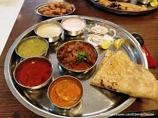
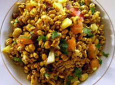

⬅
SPECIAL MISAL
Kolhapuri Misal is a famous spicy Maharashtrian dish originating from Kolhapur. It is one of the most popular foods in the city and is known for its rich flavor and fiery taste.
PURAN POLI
Puran Poli is one of the most loved traditional sweet dishes in Kolhapur.
NON-VAGE DISH
The most famous non-vegetarian food of Kolhapur is Kolhapuri Mutton Thali, especially the combination of Tambda Rassa and Pandhra Rassa. These dishes are considered the pride of Kolhapuri cuisine

SPECIAL BHEL
Kolhapuri Bhel is a popular street food of Kolhapur. It is a spicy and tangy snack made from puffed rice, sev, onions, tomatoes, coriander, peanuts, and special chutneys. What makes it unique is the use of Kolhapur's famous spicy masalas, which give it a stronger and more flavorful taste than ordinary bhel.
